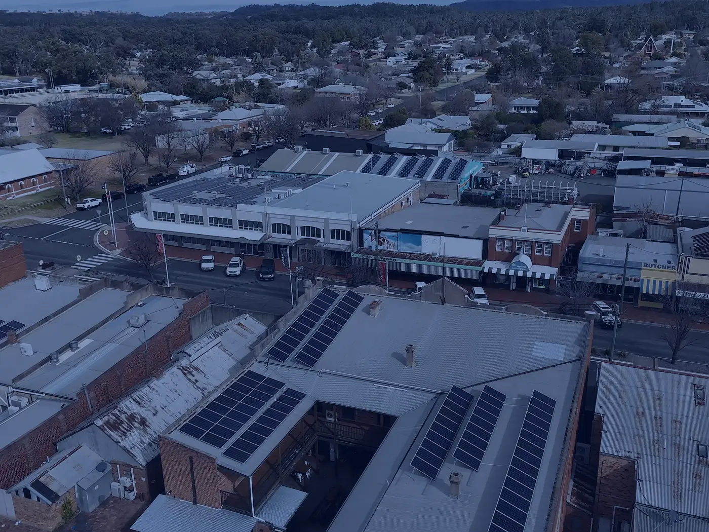

מדריך מעשי למי שיש גג ורוצה להתחיל לחסוך, שלב אחר שלב.
צוות טרינרג'י·
מערכת סולארית על הגג היא אחת ההחלטות הכלכליות המשתלמות שבעל בית יכול לקבל, אבל רק כשהיא מתוכננת נכון. לפני שמשווים הצעות מחיר, כדאי להבין ממה המערכת בנויה, מה משפיע על התפוקה שלה ואילו שאלות לשאול את מי שיתקין אותה.
מתחילים מהגג
הגג קובע כמעט הכל: כמה פאנלים ייכנסו, כמה שמש הם יקבלו ואיך הם יחוברו. לפני כל דבר אחר בודקים שלושה דברים.
כיוון ושיפוע. גג שפונה דרומה מקבל את רוב השמש לאורך היום, אבל גם גג שפונה מזרחה או מערבה יכול לעבוד היטב בתכנון נכון.
הצללה. עץ, דוד שמש, בניין סמוך או מעקה יכולים להטיל צל על חלק מהפאנלים בשעות מסוימות. צל קטן על פאנל אחד עלול להוריד את התפוקה של שורה שלמה.
מצב הגג. מערכת סולארית נשארת על הגג שנים רבות. אם הגג צריך איטום או תיקון, עדיף לעשות את זה לפני ההתקנה ולא אחריה.

תכנון הפריסה על הגג נעשה לפי הכיוון, השיפוע והצל לאורך כל שעות היום
כמה חשמל הבית צורך
גודל המערכת נקבע לפי הצריכה בפועל ולפי השטח שיש על הגג. החשבונות של השנה האחרונה מראים איך הצריכה משתנה בין הקיץ לחורף, ומאפשרים לתכנן מערכת שלא קטנה מדי ולא גדולה יותר ממה שצריך.
כדאי לחשוב גם קדימה: רכב חשמלי, משאבת חום או חדר נוסף יכולים לשנות את הצריכה בשנים הקרובות. תכנון שלוקח את זה בחשבון חוסך הרחבה יקרה בהמשך.
פאנלים וממיר: על מה לא מתפשרים
הפאנלים הופכים את אור השמש לחשמל, והממיר מתאים את החשמל לבית ולרשת. שניהם צריכים לעבוד יחד שנים רבות, ולכן חשוב לבדוק את איכות היצרן, את תנאי האחריות ומי נותן את השירות בפועל כשצריך אותו.
מערכת טובה כוללת גם ניטור: אפליקציה או מסך שמראים כמה חשמל המערכת מייצרת בכל יום. כך רואים מיד אם משהו לא עובד כמו שצריך, ולא מגלים את זה רק בחשבון הבא.
מערכת סולארית היא לא מוצר מדף. היא נבנית לפי הגג, לפי הצריכה ולפי מה שהבית יצטרך בעוד כמה שנים.
אישורים וחיבור לרשת
לפני ההתקנה צריך לקבל אישורים ולתאם את החיבור לרשת החשמל. התהליך כולל הגשת בקשה, בדיקה של המערכת אחרי ההתקנה והחלפה או התאמה של המונה. חברה מנוסה מטפלת בכל השלבים האלה בעצמה, כך שבעל הבית לא צריך לרדוף אחרי טפסים.
אחרי החיבור לרשת, החשמל שהמערכת מייצרת ולא נצרך בבית עובר לרשת
אחרי ההתקנה
מערכת סולארית כמעט לא דורשת טיפול, אבל היא כן צריכה תשומת לב. ניקוי של הפאנלים מאבק ומלכלוך משפר את התפוקה, ומבט קבוע בנתוני הניטור מאפשר לזהות תקלה מוקדם. כדאי לברר מראש מי אחראי על התחזוקה ומה כולל השירות.
איך בוחרים חברה
ההבדל בין מערכת שעובדת טוב לבין מערכת שמאכזבת נמצא בדרך כלל בתכנון ובביצוע. שאלו מי מתכנן את המערכת, מי מתקין אותה ומי ייתן שירות בעוד כמה שנים. בקשו לראות פרויקטים שהחברה כבר ביצעה, וודאו שההצעה מפרטת את הציוד, האחריות ולוחות הזמנים.